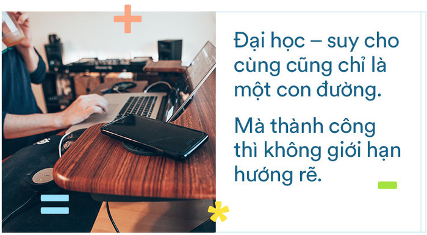
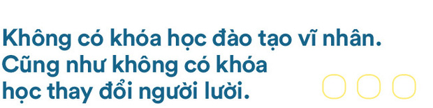
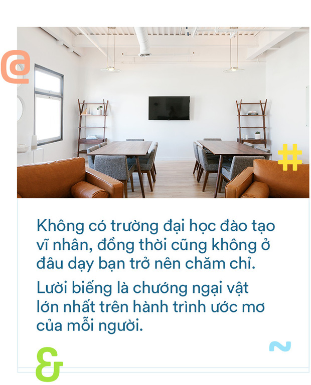

Đại học là con đường thành công duy nhất ?
Theo thống kê của Bộ GD-ĐT, năm 2020, Xét tuyển đại học, cao đẳng, trung cấp nhóm ngành sư phạm (khoảng 71.45%).Giảm :2.55% so với năm 2019 Con số đã nói cho ta biết xu thế vào đại học đang giảm dần. Và đó là một thực trạng chung của nền giáo dục.
Từ sự việc một nữ sinh ở huyện Thăng Bình, Quảng Nam treo cổ tự tử chiều 5/10, do đau khổ vì không đủ điểm vào Đại học Luật như mong muốn và một số trường hợp thương tâm khác liên quan đến vấn đề điểm số xét tuyển đại học buộc chúng ta phải nhìn nhận,suy ngẫm lại: Đại học có phải con đường duy nhất?
Kì thi THPT Quốc gia diễn ra, là cuộc cạnh tranh của các sĩ tử. Trên cả nước có hàng triệu thí sinh tham gia nhưng không phải ai cũng có được tấm vé vào được trường đại học mình mong muốn. Hơn nữa, nó gây ra nhiều hệ lụy: khiến học sinh tuyệt vọng, trầm cảm; phụ huynh suy sụp, thất vọng, tạo áp lực cho con cái.
Không phải tự nhiên mà người ta nói: “Đại học không phải là con đường duy nhất dẫn đến thành công.” Trên thực tế cho thấy người đi học đại học sẽ có phần thuận lợi và an toàn hơn vì họ có tấm vé thông hành là: Tấm bằng đại học. Cộng với việc ta đang sống một quốc gia trọng bằng cấp như ở Việt Nam thì hầu hết các công việc đều cần bằng đại học. Bạn Sơn – thành viên của chi đoàn 11A1 thắc mắc “ Không vào đại học thì lấy gì mà ăn ?”. Nhưng không phải là không có bằng Đại học thì sinh viên không còn con đường nào đến thành công.
“Trượt đại học” không có nghĩa là không có tương lai  
Đỗ vào một trường đại học danh tiếng có thể khiến họ tự hào lắm nhưng sau này ra đời họ không thể mang danh ngôi trường đó ra để xin việc nếu bạn không có khả năng. Jack Ma từng "trượt một bài kiểm tra quan trọng lúc còn học tiểu học hai lần, trượt bài kiểm tra trung học ba lần và thất bại trong kỳ thi tuyển sinh đại học hai lần". Đồng thời, Jack Ma cũng đã bị Đại học Harvard từ chối đến 10 lần! Nhưng giờ vị thế của ông đã mang tầm cỡ ảnh hưởng trên toàn thế giới.
Con đường nào cho những người không học đại học?
Có nhiều con đường sinh viên có thể theo đuổi ví dụ như việc học nghề. Năm 2020, cả nước có hơn 900.000 thí sinh đăng ký dự thi tốt nghiệp THPT, trong đó tỉ lệ thí sinh đăng ký xét tuyển ĐH-CĐ giảm hơn 9.800 thí sinh so với năm 2019 và riêng tại TP.HCM, năm học 2020-2021 có hơn 20.000 học sinh lớp 9 không thi vào THPT, cho thấy xu hướng tích cực của giáo dục nghề nghiệp. Bên cạnh đó, khi cuộc cách mạng công nghiệp 4.0 bùng nổ đã ảnh hưởng không nhỏ đến tâm lý chọn ngành nghề của các bạn trẻ, minh chứng qua việc công bố điểm sàn nhận hồ sơ xét tuyển của thí sinh tốt nghiệp THPT vừa rồi vào các ngành như: Robot và Trí tuệ nhân tạo, Công nghệ thông tin, Khoa học dữ liệu,... đã tăng mạnh. Theo phát biểu của Nguyên Bộ trưởng Bộ Giáo dục Phạm Vũ Luận cho rằng: “chương trình giáo dục còn coi nhẹ thực hành, coi nhẹ vận dụng kiến thức, nặng nề về lí thuyết hàn lâm, không gắn với thực tiễn, không gắn với nghiên cứu khoa học và chuyển giao công nghệ”.
Ngoài ra nếu có khả năng kinh doanh và gia đình ủng hộ sinh viên cũng nên thử sức để biết khả năng của mình và rút ra nhiều kinh nghiệm. Cụ thể ta có thể cũng đã biết đến hàng loạt tên tuổi như Steve Jobs (cha đẻ Apple), Bill Gates (người sáng lập Microsoft), Mark Zuckerberg (chủ nhân Facebook), Jack Ma, …. Tất cả họ đều có chung là : Họ đều đã có chuẩn bị về mặt kĩ năng cũng như tư thế sẵn sàng đối mặt với thử thách mà con đường đã chọn.
Học sinh lớp 11 – những con người đang chuẩn bị hành trang đến ngưỡng cửa đại học có nhận xét gì về vấn đề này? Bạn Nguyễn Thị Ngọc Bích- học sinh lớp 11D1 trường THPT Sóc Sơn đã có những chia sẻ: “Đại học từ trước đến nay luôn được coi là cánh cửa duy nhất dẫn lối đến thành công trong tương lai. Vì vậy,phần lớn mọi người đều gò ép mình trong khuôn đúc của tri thức mà đánh mất giái trị bản thân. Nhưng theo cá nhân mình, đại học không phải là con đường duy nhất. Ta có thể trau dồi kiến thức, kỹ năng tại những trường cao đẳng, trung cấp hoặc những ngôi trường đào tạo nghề. Xã hội cũng là một người thầy vĩ đại. Khi ta dám trải nghiệm, khám phá những điều mới lạ bên ngoài cánh cổng đại học, ta sẽ có được kinh nghiệm và những kỹ năng sống. Đó là hành trang quan trọng để gặt hái quả ngọt thay vì một tấm bằng. Con đường mới sẽ được tạo nên bởi những người tiên phong với những bước tiến mới.”
Theo xu thế phát triển, ngày càng nhiều cơ hội mở ra cho những người trẻ. Bởi vậy, đại học chỉ là một trong nhiều con đường đi đến thành công. Con đường thành công của mỗi cá nhân không nhất thiết được lập trình bằng công thức học đại học. Nếu bạn có ước mơ, có khao khát và dám tự mình quyết định cuộc đời mình đừng ngần ngại theo đuổi đam mê. Ngưỡng cửa đại học chưa chắc đã là lựa chọn hoàn hảo nhất.
Theo xu thế phát triển, ngày càng nhiều cơ hội mở ra cho những người trẻ. Bởi vậy, đại học chỉ là một trong nhiều con đường đi đến thành công. Con đường thành công của mỗi cá nhân không nhất thiết được lập trình bằng công thức học đại học. Nếu bạn có ước mơ, có khao khát và dám tự mình quyết định cuộc đời mình đừng ngần ngại theo đuổi đam mê. Ngưỡng cửa đại học chưa chắc đã là lựa chọn hoàn hảo nhất.